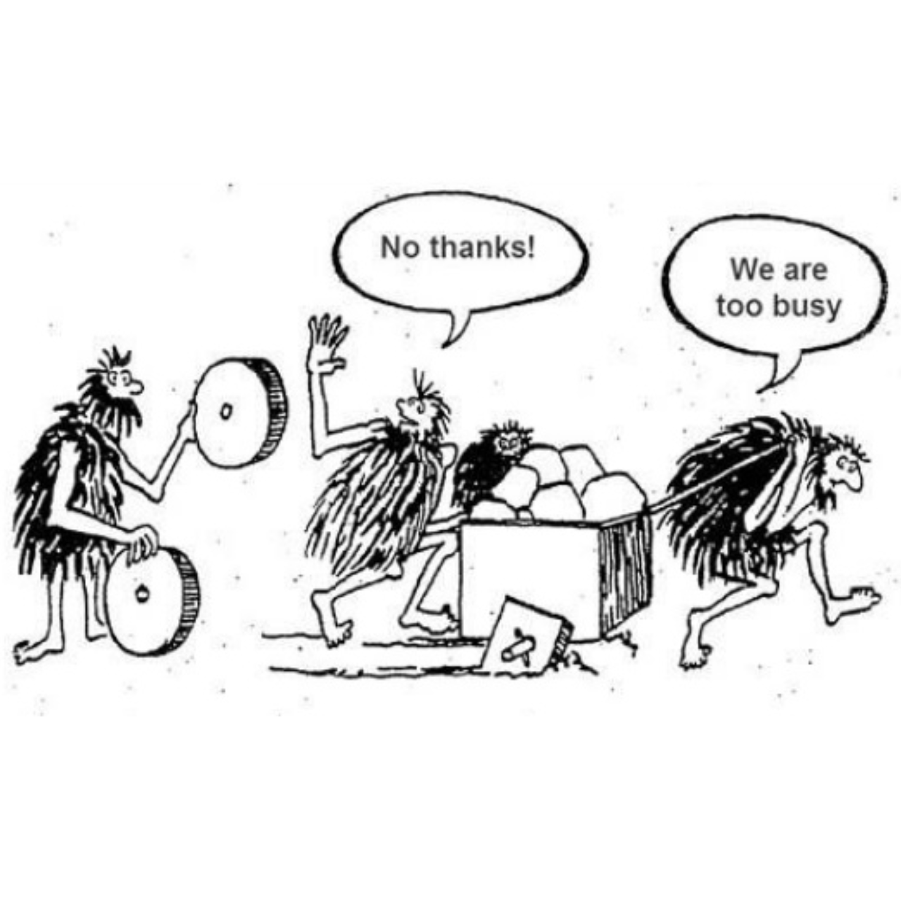

January 2019
In the past months I have started being interested in cryptocurrencies and blockchain. I am not a nerd or a deep tech person, I would say I am curious and often come up with dumb questions. Should I be embarrassed for that? I guess not, I am pretty sure that I am in very good company out there.
I feel like an alien when I go to meetups to learn something new and I listen to entrepreneurs and experts in the field but I discovered that between common people there is a lot of confusion about this matter, that is why I developed the idea to create a
UX project to educate-entertain-study a group of people using blockchain.
Still in progression...
In the meanwhile I will share the pills about blockchain and bitcoin I am reading around the web and more.
#1 BASIC INFO
What is bitcoin?
Bitcoin is a type of money that is completely virtual. It's like an online version of cash and often described as a cryptocurrency, a virtual currency or a digital currency.
How does it work?
Each Bitcoin is basically a computer file which is stored in a 'digital wallet' app on a smartphone or computer.
People can send Bitcoins to your digital wallet, and you can send Bitcoins to other people.
Transactions are verified by network nodes through cryptography and recorded in a public distributed ledger called a blockchain.
This makes it possible to trace the history of Bitcoins to stop people from spending coins they do not own, making copies or undo-ing transactions.
Bitcoin is a de-centralized currency, it works without a central bank; the bitcoin network has no need for intermediaries because the trust is intrinsic in the nature of the blockchain, this is why the bitcoin network is also called peer-to-peer.
Who did invent bitcoin?
Bitcoin was invented by an unknown person or group of people using the name Satoshi Nakamoto and released as open-source software in 2009.
How do people get Bitcoins?
There are three main ways people get Bitcoins.
• You can buy Bitcoins using 'real' money.
• You can sell things or services and let people pay you with Bitcoins.
• Or they can be created using a computer.
How are new Bitcoins created?
In order for the Bitcoin system to work, people can make their computer process transactions for everybody.
The computers are made to work out incredibly difficult sums. Occasionally they are rewarded with a Bitcoin for the owner to keep.
This is called mining.
#2 ACCEPTING CHANGES IS HARD
Blockchain is compared to the Internet for the huge entity of innovation that is able to bring to our society, to how we relate to each other.
During the process of knowing and accepting it lots of things will be said: everything and the opposite.
"The future is always difficult to embrace and goes faster than we think."
Dinis Guarda, Author, CEO Founder ztudium blocksdna intelligenthq, Keynote Speaker.

#3 A PLAIN AND COMPREHENSIBLE APPROACH IS NEEDED
’Being a new concept in technology, Bitcoin is still explained using technical literature which limits the understanding to developers for the most part.
If you think of internet in the mid 90s, most people had no clue what it meant. E-mail ultimately made it easy to use and understand internet.
Like internet, bitcoin needs a killer-app to abstract from its mechanics so it can be widely used and easily understood by common people as a digital currency.’
#4 CONFUSION
‘The fact that bitcoin can be anonymously used to conduct transactions between any account holder, anywhere and anytime across the globe, makes it rather flattering and attractive to criminals.’
One of the main issues about Blockchain is confusion, due to first association with bitcoin and consequent attempts of making easy money even in an unethical way. Bitcoin … ethical or unethical? Knowledge is the key, for sure, but also a little bit of common sense can help.
They say bitcoin is attractive to criminals for the anonymity and so on. But how much fiat money is involved in criminal transactions? Is it maybe ‘the human’ that possesses the power to give bad or good meaning to things or processes?
#5 GOOD DESIGN TAKES TIME
I have seen the evolution of the interaction between the users and the internet from the late 80’s until today. I remember those days when I could access the computer lab with friends studying computer science at University, amazed at the sight of the dark screens where they typed lines of code ...’This is internet, we are connected to the world.’ They said. Wow! Completely new and exciting for me, even if so obscure.
And then the browsers… text without graphics, first websites… until today where the user and his needs are leading the scene.
A long story for the user to reach a full power over the potentiality of internet without having to know the technology behind it.
I guess the same story will repeat as to blockchain technology and use of cryptocurrencies.
My first internet experience
“New technologies, new applications, new methods of interactions are continually arising and evolving.
Each new development seems to repeat the mistakes of the earlier ones.
Each new field requires time before it, too, adopts the principles of good design…requires experimenting and study before the principle of good design can be fully integrated into practice.
Good design starts with an understanding of psychology and technology.
Good design requires good communication, especially from machine to person, indicating which actions are possible, what is happening, and what is about to happen.”
Don Norman, from The Design of Everyday Things
#6 OTHER REASONS THAN BEING NEW MAKE BITCOIN DIFFICULT TO UNDERSTAND
‘Bitcoin is difficult to understand for a lot of people because they don't really understand how money works in the first place. People are so used to using fiat currency that they just know it works as a way to get stuff from people. They don't really understand how it works, in terms of why it has value, how much of it there is, how it is made, if the bank actually has the money they say they do, etc.’
It is true that people use money without never asking what money really is. It has happened to me too. The curiosity about bitcoin has arisen the awareness of knowing nothing about money.
In the process of understanding something about the origin and the meaning of money I discovered Andreas Antonopoulos, a phenomenal, brilliant man I consider a guru of bitcoin, who is able to talk about currency issues, government issues, world issues in a way as simple and entertaining as in this video!
Andreas Antonopoulos - The Death of Money - PART 1/2 | London Real